# Instalar paquetes adicionales
install.packages("metaviz")
remotes::install_github("MathiasHarrer/dmetar")
remotes::install_github("daniel1noble/orchaRd")Herramientas avanzadas
Tamara Ricardo ![]()
Introducción
Esta sección es opcional y está dirigida a personas con conocimientos más avanzados de R. Presentaremos una serie de paquetes adicionales que permiten generar visualizaciones más flexibles y listas para incluir en informes técnicos o publicaciones científicas, así como funciones complementarias para trabajar con modelos multinivel y metarregresiones múltiples.
Para utilizarlos, es necesario reajustar los modelos usando el paquete metafor, ya que no son compatibles con la salida de meta.
Ejemplo práctico en R
Instalación de paquetes
Carga de paquetes
# Cargar paquetes
pacman::p_load(metafor,
orchaRd,
metaviz,
dmetar,
scico,
tidyverse)Ajuste del modelo
Trabajaremos nuevamente con el dataset dat.bornmann2007, que analiza el sesgo de género en la adjudicación de subsidios para investigación:
# Cargar datos
datos <- dat.bornmann2007 |>
# Crear identificador único
rowid_to_column(var = "id")El paquete metafor no cuenta con funciones específicas para cada medida de asociación, por lo que es necesario calcular previamente los estimadores de efecto usando la función escalc():
1datos <- escalc(measure = "OR",
2 ai = waward,
3 n1i = wtotal,
4 ci = maward,
5 n2i = mtotal,
data = datos,
slab = study)- 1
-
measure: medida de asociación a usar como estimador de efecto. - 2
-
ai: número de eventos en el grupo expuesto. - 3
-
n1i: tamaño muestral en el grupo expuesto. - 4
-
ci: número de eventos en el grupo no expuesto. - 5
-
n2i: tamaño muestral en el grupo no expuesto.
Si no tuviéramos el tamaño muestral en cada grupo, podríamos reemplazar n1i por bi (expuestos sin el evento) y n2i por di (no expuestos con el evento).
Los argumentos a completar van a depender de la medida de asociación que especificamos en el argumento
measure.Para acceder a la ayuda de la función y ver opciones disponibles, ejecutar el comando
?escalcen la consola de R.
Exploremos el resultado:
glimpse(datos)Rows: 66
Columns: 16
$ id <int> 1, 2, 3, 4, 5, 6, 7, 8, 9, 10, 11, 12, 13, 14, 15, 16, 17, …
$ study <chr> "Ackers (2000)", "Ackers (2000)", "Ackers (2000)", "Ackers …
$ obs <int> 1, 2, 3, 4, 5, 6, 7, 1, 2, 3, 4, 5, 6, 7, 1, 1, 1, 2, 3, 4,…
$ doctype <chr> "Grey", "Grey", "Grey", "Grey", "Grey", "Grey", "Grey", "Ar…
$ gender <chr> "M&F", "M&F", "M&F", "M&F", "M&F", "M&F", "M&F", "M&F", "M&…
$ year <dbl> 1996.0, 1996.0, 1996.0, 1996.0, 1996.0, 1996.0, 1996.0, 199…
$ org <chr> "MSCA", "MSCA", "MSCA", "MSCA", "MSCA", "MSCA", "MSCA", "DF…
$ country <chr> "Europe", "Europe", "Europe", "Europe", "Europe", "Europe",…
$ type <chr> "Fellowship", "Fellowship", "Fellowship", "Fellowship", "Fe…
$ discipline <chr> "Physical Sciences", "Physical Sciences", "Physical Science…
$ waward <int> 139, 45, 44, 63, 157, 114, 381, 8, 5, 6, 8, 4, 20, 5, 11, 2…
$ wtotal <int> 711, 258, 236, 251, 910, 589, 2027, 13, 8, 8, 16, 11, 44, 1…
$ maward <int> 274, 166, 219, 96, 252, 460, 489, 53, 53, 63, 53, 43, 55, 7…
$ mtotal <int> 1029, 908, 928, 507, 1118, 2244, 2275, 72, 82, 97, 94, 92, …
$ yi <dbl> -0.40107542, -0.05726822, -0.29852194, 0.36093779, -0.33336…
$ vi <dbl> 0.013916635, 0.034288863, 0.033912253, 0.034041922, 0.01282…Se añadieron dos nuevas variables, que utilizaremos para ajustar el modelo:
yi: estimador de efecto individual en escala logarítmica (log-OR).vi: varianza del estimador.
Como los datos incluyen más de una observación por estudio, usaremos la función rma.mv() para ajustar un modelo multinivel:
1mod <- rma.mv(yi = yi,
2 V = vi,
3 data = datos,
4 slab = study,
5 mods = ~ type,
6 random = ~ 1|study/id,
7 intercept = TRUE
)- 1
-
yi: estimador de efecto individual. - 2
-
V: varianza del estimador. - 3
-
data: tabla de datos. - 4
-
slab: identificador único del estudio. - 5
-
mods: especifica el moderador/es para metarregresión o análisis de subgrupos. - 6
-
random: define la estructura jerárquica de los datos: - 7
-
intercept: calcular el intercepto (TRUEpor defecto/FALSE).
Para conocer otros tipos de modelos disponibles, se recomienda consultar las viñetas de ayuda del paquete
metafory las funcionesrma(),rma.uni(),rma.mv(), etc.
Visualización avanzada de resultados
Paquete orchaRd
El paquete orchaRd (Nakagawa et al. 2023) permite crear gráficos visualmente atractivos y altamente personalizable basados en el motor gráfico ggplot2.
La función orchard_plot() genera un gráfico donde el estimador global se representa por un punto de color con “ramas” horizontales representando el intervalo de confianza (línea gruesa) y el intervalo de predicción (línea fina). Cada estimador individual se representa con puntos más claros, cuyo tamaño depende de la precisión del estudio.
Los argumentos principales son:
orchard_plot(
1 object = mod,
2 mod = "1",
3 group = "study",
4 xlab = "log(OR)",
5 k = TRUE,
6 g = TRUE
)- 1
-
object: modelo de meta-análisis o tabla de resultados (obligatorio). - 2
-
mod: moderador/es del modelo ("1"para mostrar solo el estimador global). - 3
-
group: identificador del estudio o clúster (obligatorio). - 4
-
xlab: título a mostrar en el eje \(X\) (obligatorio). - 5
-
k: mostrar etiqueta con número de estudios (TRUE/FALSE). - 6
-
g: mostrar etiqueta con número de clústers (TRUE/FALSE).
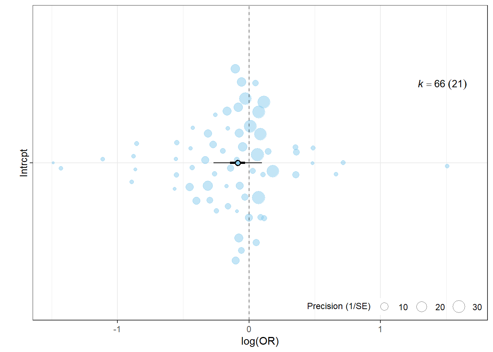
Podemos agregar el moderador categórico añadiendo en nombre de la variable entre comillas en el argumento mod. Además, vamos a añadir escalas de colores personalizadas:
# Guardar orchard plot en un objeto
g1 <- orchard_plot(
mod,
mod = "type",
group = "study",
xlab = "log(OR)",
k = TRUE,
g = TRUE)
# Personalizar con ggplot2
g1 +
# Escalas colorblind-friendly
scale_color_scico_d(palette = "hawaii") + # color de borde
scale_fill_scico_d(palette = "hawaii") + # color de relleno
theme_bw()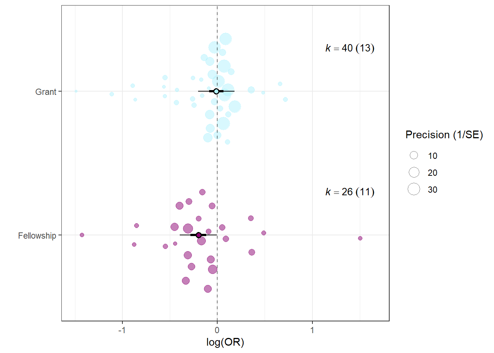
La función caterpillars() genera un gráfico similar al forest plot donde se muestra el estimador de efecto individual con su \(95\%~IC\) y el estimador global, omitiendo las tablas de resultados, lo cual resulta de gran utilidad cuando el número de estudios es grande:
- 1
-
mod: moderador/es del modelo ("1"para mostrar solo el estimador global). - 2
-
group: identificador del estudio o clúster (obligatorio). - 3
-
xlab: título a mostrar en el eje \(X\) (obligatorio). - 4
-
k: mostrar etiqueta con número de estudios (TRUE/FALSE). - 5
-
g: mostrar etiqueta con número de clústers (TRUE/FALSE).
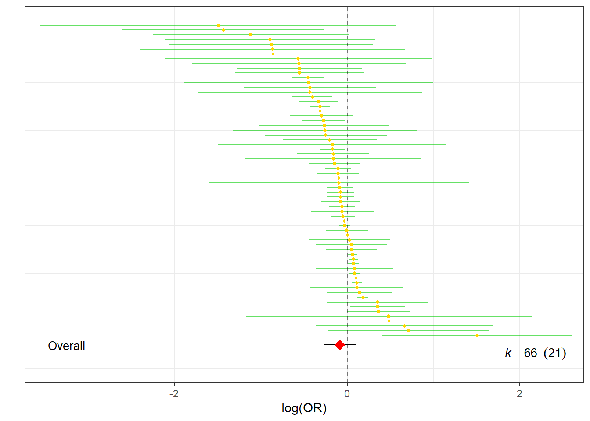
Podemos añadir los estimadores de efecto globales por nivel del moderador categórico usando el argumento mod y modificar los colres con los argumentos colerrorbar, colpoint y colpoly. La opción por defecto no muestra los identificadores de estudio, pero al estar basado en ggplot2, podemos añadirlo como una capa de anotación de texto:
caterpillars(mod,
mod = "type",
group = "study",
xlab = "log(OR)",
k = TRUE,
g = TRUE,
colerrorbar = "#705C52",
colpoint = "#1B0D33",
colpoly = "#87B666") +
# Añadir capa identificador de estudio
geom_text(aes(label = mod$slab),
size = 2,
nudge_x = 1,
check_overlap = T)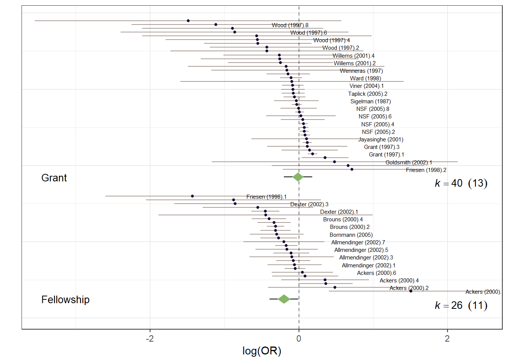
La función bubble_plot() nos permite generar bubble plots para moderadores continuos:
# Añadir moderador continuo
mod1 <- update(mod, mods = ~ type + year)
# Bubble plot
bubble_plot(
mod1,
group = "study",
1 xlab = "Año de publicación",
k = TRUE,
g = TRUE,
transfm = "invlogit",
mod = "year",
2 est.col = "orange",
3 ci.col = "magenta",
4 pi.col = "purple",
5 ci.lwd = 0.75,
6 pi.lwd = 0.75
)- 1
-
xlab: nombre del moderador continuo. - 2
-
est.col: color de la línea de regresión. - 3
-
ci.col: color para el intervalo de confianza de la línea de regresión. - 4
-
pi.col: color para el intervalo de predicción de la línea de regresión. - 5
-
ci.lwd: grosor de línea para el intervalo de confianza de la línea de regresión. - 6
-
pi.lwd: grosor de línea para el intervalo de predicción de la línea de regresión.
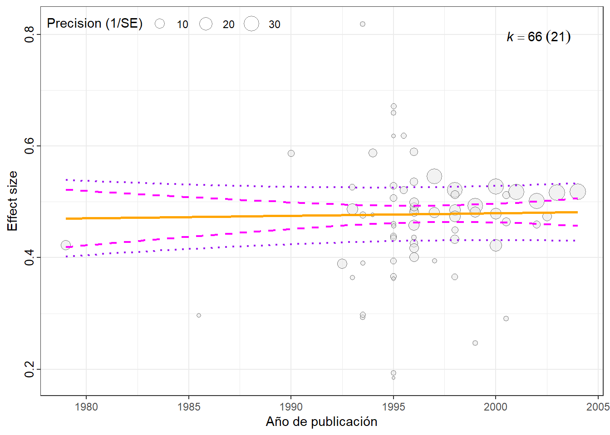
Puedo estratificar los bubble plot según niveles del moderador categórico usando el argumento by:
bubble_plot(
mod1,
group = "study",
xlab = "Año de publicación",
k = TRUE,
g = TRUE,
transfm = "invlogit",
mod = "year",
est.col = "orange",
ci.col = "magenta",
pi.col = "purple",
ci.lwd = 0.75,
pi.lwd = 0.75,
by = "type"
) +
# Color de las burbujas
scale_fill_scico_d()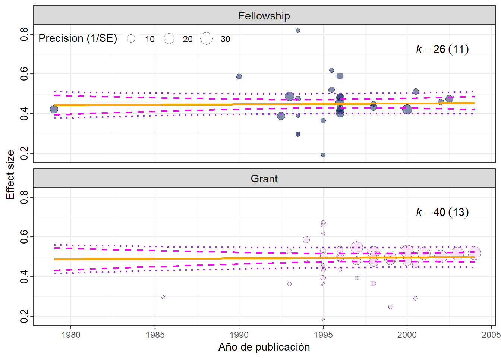
Análisis de sensibilidad
La función leave_one_out() del paquete orchaRd permite realizar un análisis de sensibilidad del modelo de meta-análisis, especificando en el argumento group el nombre de la variable que queremos usar para remover estudios iterativamente:
leave_one <- leave_one_out(mod, group = "study")Este procedimiento ayuda a identificar si algún estudio influye de manera desproporcionada en los resultados del meta-análisis. Podemos graficar los resultados usando la función orchard_leave1out():
orchard_leave1out(leave1out = leave_one,
xlab = "log(OR)")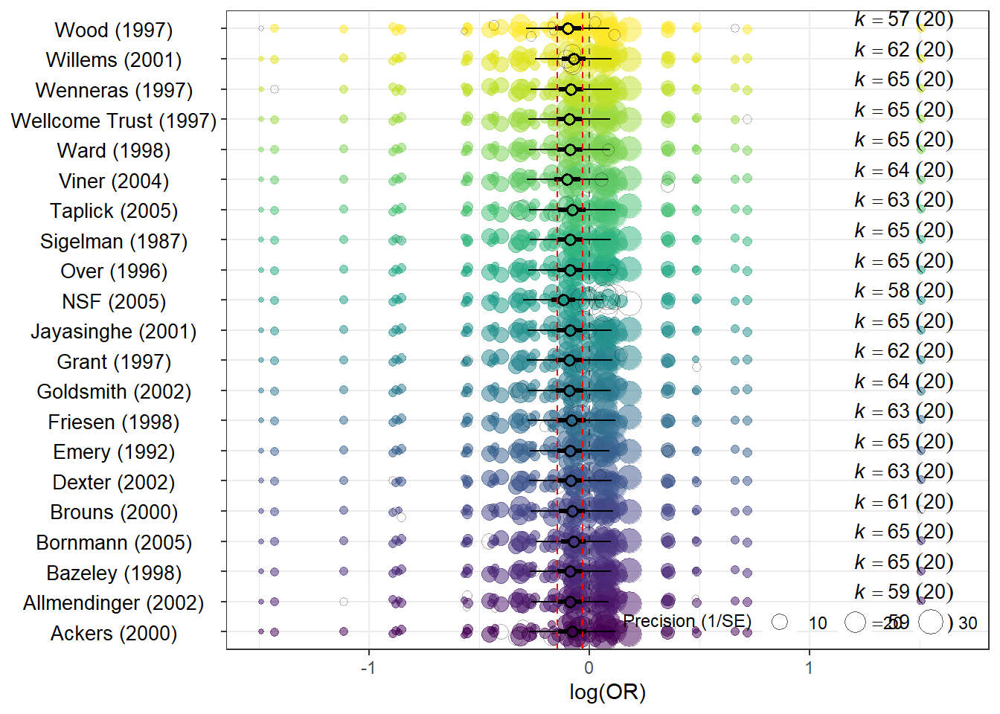
En el gráfico, el eje \(Y\) representa cada elemento del grupo (en este caso, cada estudio), mientras que el eje \(X\) muestra el estimador de efecto. Para cada estudio, se presenta el resultado del modelo al excluirlo: estimador de efecto global, su intervalo de confianza, el intervalo de predicción, y los “puntos fantasma”, que marcan la ubicación del estudio excluido.
🔗 Otras opciones de gráficos con
orchaRd: LINK
Paquete metaviz
El paquete metaviz (Kossmeier, Tran, y Voracek 2020) proporciona funciones para generar gráficos altamente personalizables y compatibles con ggplot2, ideales para informes técnicos y publicaciones científicas.
Una de sus principales funciones es viz_forest(), que permite crear forest plots con gran control estético. Es importante tener en cuenta que no es compatible con modelos multinivel, por lo que debe utilizarse con estimadores individuales previamente calculados mediante escalc() del paquete metafor.
# Forest plot básico
viz_forest(x = datos |> select(yi, vi),
study_labels = datos$study,
group = datos$type,
method = "REML",
x_trans_function = exp,
annotate_CI = TRUE,
type = "standard")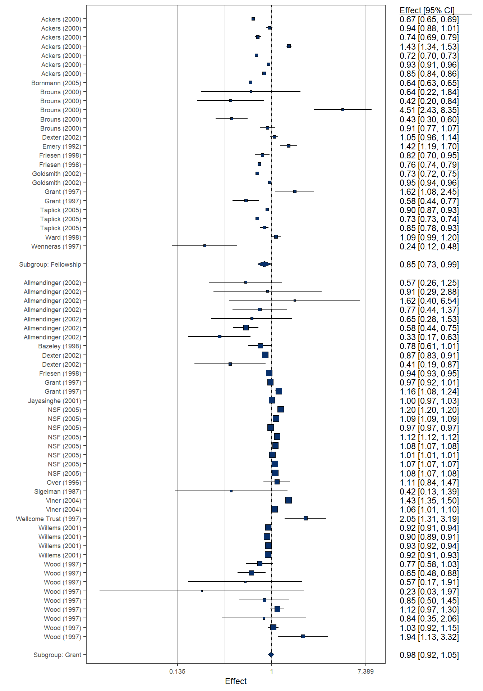
x: columnas con el estimador (yi) y su varianza (vi).study_labels: etiquetas para los estudios individuales (opcional).group: variable categórica para agrupar y colorear las observaciones (opcional).method: método para estimar la heterogeneidad (por ej.,"REML").x_trans_function: transforma los valores del eje \(X\) (e.g.,exppara OR).annotate_CI: agrega una tabla con los estimadores de efecto y sus \(95\%~CI\).type: tipo de gráfico a mostrar ("standard","study_only","summary_only", etc.).
El argumento variant puede tomar valores "classic", "thick" o "rain" para cambiar el estilo visual del gráfico. También podemos modificarlo usando las funciones específicas viz_thickforet() y viz_rainforest().
# Estilo "thick"
viz_thickforest(
x = datos |> select(yi, vi),
group = datos$type,
method = "REML",
x_trans_function = exp,
annotate_CI = TRUE,
type = "summary_only"
)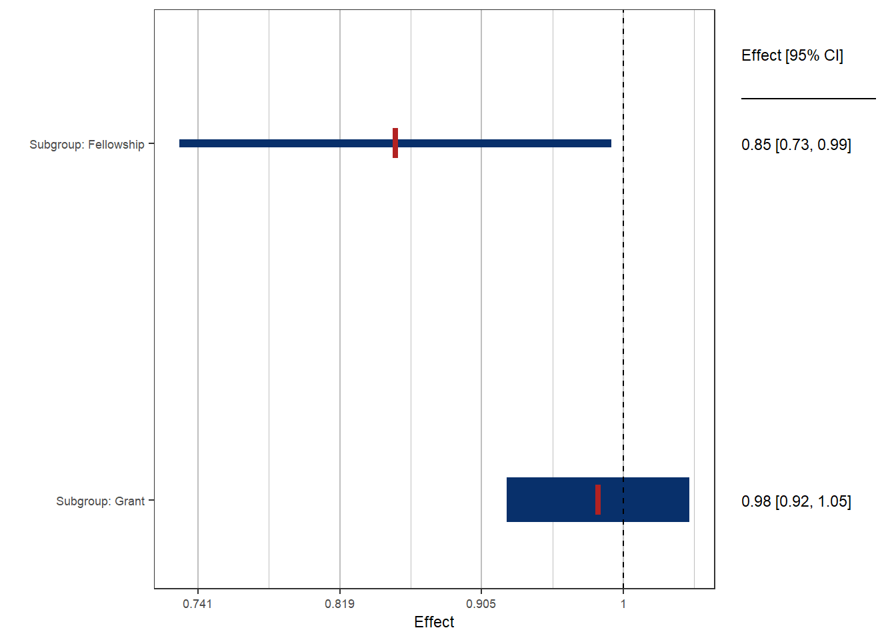
# Estilo "rainforest"
viz_rainforest(
x = datos |> select(yi, vi),
group = datos$type,
method = "REML",
x_trans_function = exp,
annotate_CI = TRUE,
type = "summary_only"
)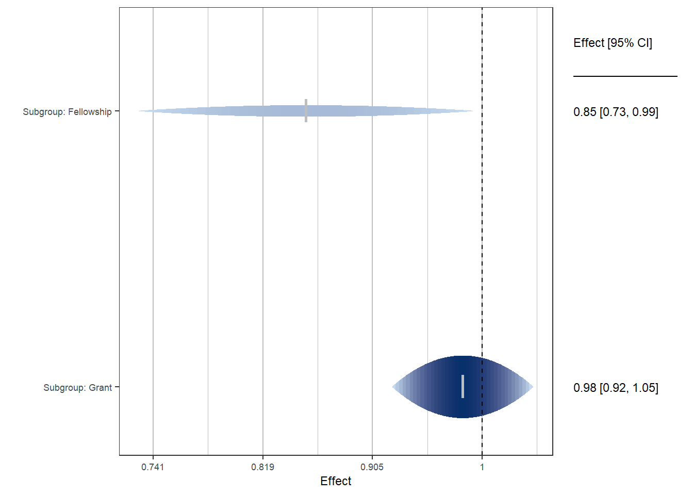
metaviz también ofrece funciones para crear funnel plots más informativos y estéticamente atractivos. Por ejemplo viz_funnel():
1viz_funnel(x = datos |> select(yi, vi),
2 group = datos$type,
3 contours_col = "Purples") +
# Cambiar colores de los puntos
scale_color_viridis_d()- 1
-
x: columnas que contienen los estimadores de efecto individuales y su varianza. - 2
-
group: columna con la variable moderadora. - 3
-
contours_col: sombreado para el intervalo de confianza del funnel plot.
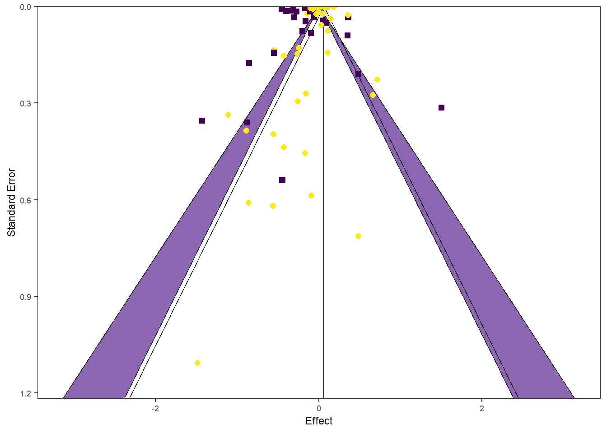
La función viz_sunset() genera una visualización alternativa al funnel plot, incorporando información sobre la potencia estadística de cada estudio:
viz_sunset(x = datos |> select(yi, vi))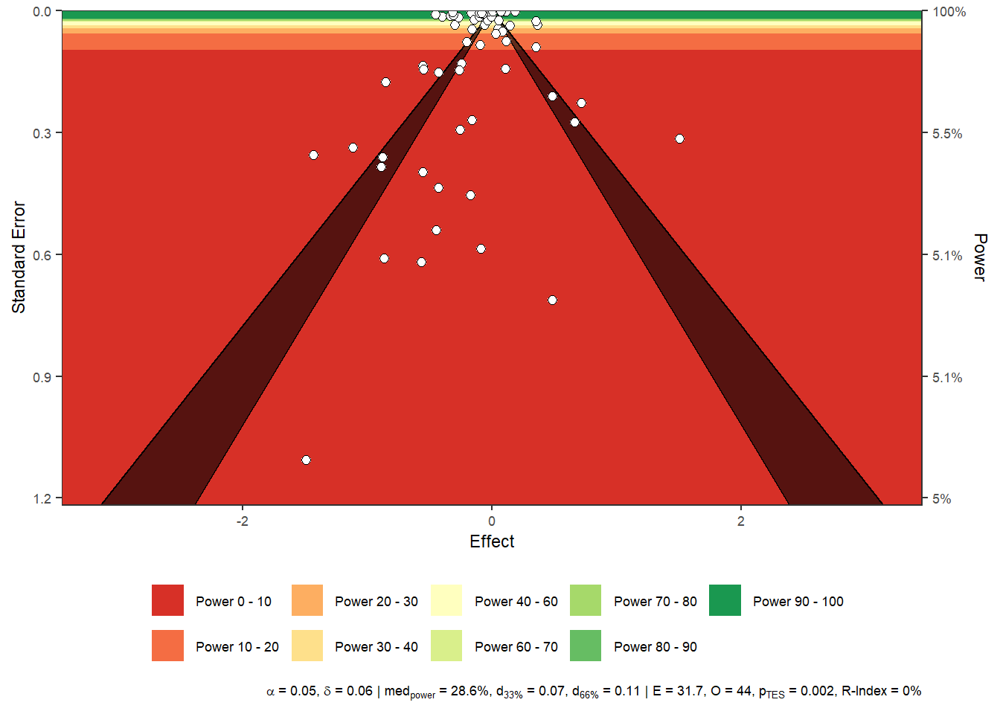
Este gráfico es especialmente útil para detectar estudios con bajo poder estadístico o que podrían estar influyendo en la asimetría del funnel plot.
Funciones adicionales
El paquete orchaRd permite generar una tabla de resultados del modelo con la función mod_results():
mod_results(mod,
group = "study",
mod = "type") name estimate lowerCL upperCL lowerPR upperPR
1 Fellowship -0.20101927 -0.2851769 -0.11686163 -0.3957853 -0.006253206
2 Grant -0.01203987 -0.0869243 0.06284457 -0.2029822 0.178902506Tamnién podemos calcular la bondad de ajuste (\(R^2\)) usando la función r2_ml():
r2_ml(mod) R2_marginal R2_conditional
0.5187737 0.7874844 Si queremos obtener el \(I^2\) correspondiente a la heterogeneidad intra-clúster (\(I^2_{nivel2}\)) e inter-clúster (\(I^2_{nivel3}\)) para el modelo multinivel podemos usar la función i2_ml() de orchaRd:
i2_ml(mod) I2_Total I2_study I2_study/id
56.13549 31.34535 24.79014 El paquete dmetar (Harrer et al. 2019) también permite calcular estos \(I^2\) usando la función mlm.variance.distribution():
mlm.variance.distribution(mod) % of total variance I2
Level 1 43.86451 ---
Level 2 24.79014 24.79
Level 3 31.34535 31.35
Total I2: 56.14% También podemos graficar el aporte de cada componente a la varianza:
i2 <- mlm.variance.distribution(mod)
plot(i2)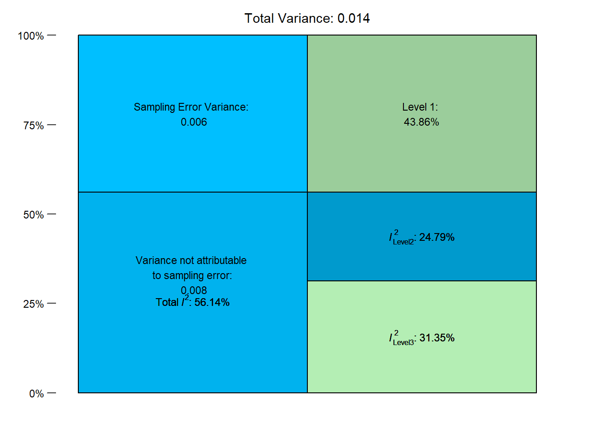
La función find.outliers() del paquete dmetar permite detectar outliers en modelos de efectos aleatorios ajustados con meta o metafor (no permite estructuras multinivel):
# Reajustar modelo
mod2 <- rma(yi = yi,
vi = vi,
method = "REML",
mods = ~ type,
data = datos)
# Detectar outliers
find.outliers(mod2)Identified outliers (REML)
-------------------------
"Allmendinger (2002).7", "Bornmann (2005)", "Brouns (2000).3", "Brouns (2000).4", "Friesen (1998).1", "Friesen (1998).3", "Goldsmith (2002).2", "NSF (2005).2", "NSF (2005).3", "NSF (2005).4", "NSF (2005).6", "NSF (2005).7", "NSF (2005).8", "Viner (2004).1", "Willems (2001).1", "Willems (2001).3"
Results with outliers removed
-----------------------------
Random-Effects Model (k = 50; tau^2 estimator: REML)
tau^2 (estimated amount of total heterogeneity): 0.0213 (SE = 0.0105)
tau (square root of estimated tau^2 value): 0.1458
I^2 (total heterogeneity / total variability): 57.76%
H^2 (total variability / sampling variability): 2.37
Test for Heterogeneity:
Q(df = 49) = 144.2567, p-val < .0001
Model Results:
estimate se zval pval ci.lb ci.ub
-0.0961 0.0371 -2.5933 0.0095 -0.1688 -0.0235 **
---
Signif. codes: 0 '***' 0.001 '**' 0.01 '*' 0.05 '.' 0.1 ' ' 1podemos obtener la tabla de coeficientes del modelo usando la función mod_results():
Referencias
Harrer, Mathias, Pim Cuijpers, Toshi Furukawa, y David Daniel Ebert. 2019. «dmetar: Companion R Package For The Guide ’Doing Meta-Analysis in R’». http://dmetar.protectlab.org/.
Kossmeier, Michael, Ulrich S. Tran, y Martin Voracek. 2020. «metaviz: Forest Plots, Funnel Plots, and Visual Funnel Plot Inference for Meta-Analysis». https://doi.org/10.32614/CRAN.package.metaviz.
Nakagawa, Shinichi, Malgorzata Lagisz, Rose E. O’Dea, Patrice Pottier, Joanna Rutkowska, Alistair M. Senior, Yefeng Yang, y Daniel W. A. Noble. 2023. «orchaRd 2.0: An R package for visualizing meta-analyses with orchard plots» 12: 4-12. https://doi.org/https://doi.org/10.32942/X2QC7K.